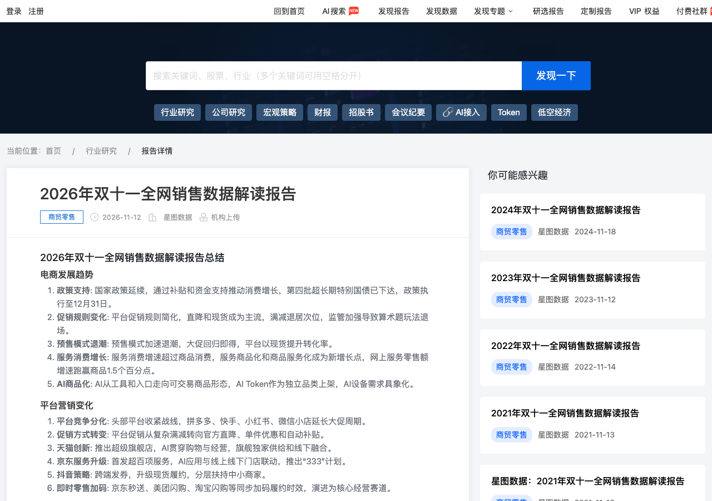

S双11战报显示美妆增长机会分散在店播、内容和即时零售
11月12日，抖音电商披露双11收官信息，护肤品牌及店播继续扩张；同日星图数据发布全网战报，覆盖综合电商、直播电商和即时零售，但各平台统计周期与口径不同。抖音电商报道｜星图数据报告
这两份材料共同指向美妆销售触点的分散化，却不能据此把店播增长直接等同于全行业增速。品牌复盘应把自播、达播、综合电商、即时零售按同一时间段分别核算成交、退货和获客成本，尤其避免将GMV与最终收入混用。星图数据报告｜东方财富对战报的报道
信号判断：双11后的常态经营更考验分渠道货盘和复购质量，单平台排名不足以代表品牌整体竞争力。
